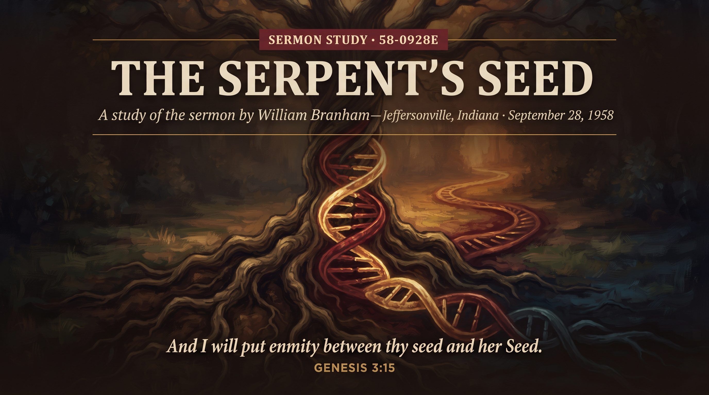

William Branham · Branham Tabernacle, Jeffersonville, Indiana · September 28, 1958
♫ Listen to or read the full sermon at Voice Of God Recordings →

This one gets preached against more than almost anything else the Prophet brought us, so let's not waste time pretending it's a theory up for debate. William Branham was sent by God with a message for this hour, and this is part of it. What follows isn't my opinion weighed against someone else's; it's what he revealed, laid out plainly, the way the Holy Spirit gave it to him.
Science has been hunting for the "missing link" between animal and man for as long as there's been a Darwin to hunt for it, and they'll never find it, because they're looking in the wrong place. It isn't bone. It's the serpent of Eden — not the crawling thing we picture today, but a beautiful, upright, highly intelligent creature, nearer to a man than anything else God had made, close enough in nature that his seed could actually mix with Eve's. Satan got into that creature and seduced her, and Cain was born of that union — the son of Satan, not the son of Adam. Abel was Adam's own. That's the root of the enmity God spoke over the serpent in Genesis 3:15: two seeds, two bloodlines, running side by side all the way from the Garden to the very hour we're living in.
Brother Branham didn't pull this from nowhere; he built it verse by verse. "Subtil" in Genesis 3:1 doesn't mean a dumb animal, it means crafty, calculating, possessing a true knowledge of the principles of life — that's what the Hebrew carries. Eve's shame at her nakedness didn't come from biting a piece of fruit; that kind of shame only comes one way, and the text tells you which. And you cannot breed a man with any animal on earth — not a chimpanzee, not anything — the blood won't mix. Something stood between animal and man that could mix with human blood, and Scripture calls it the serpent, and tells you plainly what happened to his legs and his standing when God cursed him for it. Line up the text and it says exactly what he preached.
Right in the middle of this message, Brother Branham makes something unmistakably clear: this has nothing to do with the color of anybody's skin. "God of one blood made all men," he says, and he means it — the black man, the yellow man, the white man, all one blood, all brothers, and anybody who says otherwise is wrong. The two seeds aren't about nations or races; they're about spirits, about who a person is born of. Anybody who's tried to twist this message into something about bloodlines of race has missed what the Prophet actually said, and missed it badly.
This is why Cain's religion never saved him. He was moral, hardworking, and he built an altar and brought an offering, same as his brother — and God rejected it, because being sincere and being religious was never the same thing as being born right. That's the warning every believer needs to sit with: church attendance, good works, even a genuine desire to please God, none of it substitutes for the new birth. Abel came by revelation and by blood; Cain came by his own effort and his own reasoning, and it cost him everything. The two seeds are still both in the field today, growing side by side right up to the harvest, and the whole point of this message is to know which one you are.
Source: The Serpent's Seed, preached September 28, 1958, Branham Tabernacle, Jeffersonville, Indiana. Text © Voice Of God Recordings. This study reflects my own understanding of the message as a believer, not a verbatim reproduction of the sermon.
← Back to Sermon Studies